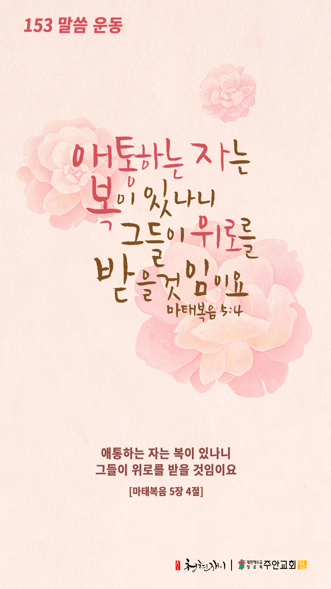

온라인 기도실 안내
2020년 09월27일(일)~10월03일(토)
- 온라인 기도실은 온 회중이 함께 하나님께 나아가는 자리입니다
- 30분 정도 여유를 갖고 하시길 바랍니다
- 말씀과 묵상, 찬양과 기도로 함께 합니다
- 배경 음악이 나올 수 있습니다 볼륨을 조절해주세요
준비가 되셨으면 아래의 버튼을 눌러주세요
찬양, 마음을 열며
- 먼저 찬양의 가사를 천천히 읽어 봅시다
1. 약한 나로 강하게 가난한 날 부하게
눈먼 날 볼 수 있게 주 내게 행하셨네
2. 내가 건너야 할 강 거기서 내 죄 씻겼네
이제 주의 사랑이 나를 향해 흐르네
3. 깊은 강에서 주가 나를 일으키셨도다
구원의 노래 부르리 예수 자유주셨네
호산나 호산나 죽임 당한 어린 양
호산나 호산나 예수 다시 사셨네
찬양, 마음을 열며
약한 나로 강하게 by 다윗의 장막
위의 찬양이 끝나면 말씀읽기를 눌러주시면 됩니다
말씀, 중심을 세우며
오늘의 말씀입니다
음악 소리가 크면 조절하시기 바랍니다
"너 예수께 조용히 나가" 연주 by 황은혜

마음의 묵상(마태복음 5장4절)
- "애통하는 자는 복이 있나니"
- 애통하는 자가 왜 복이 있을까요?
- "그들이 위로를 받을 것임이요"
- 주님의 위로를 기다립니다
회개, 다만 가슴을 치며
- 언제부터인가 메말라버린 눈물
- 애통하지 않은 건조한 가슴
있는 모습 그대로 3분 정도 회개하며 기도합니다
간절히 찾는 자가 나를 만나리라
- 나치의 위협 속에 드린 본 훼퍼의 기도
주 하나님
지금 저는 큰 어려움에 사로잡혔습니다
두려움이 저를 압도하고 있습니다
어찌해야 할지 막막하기만 합니다
주여! 당신의 은혜로 도와주십시오
두려움이 저를 지배하지 못하게 하소서
삶의 어려움을 올려드리며 3분 정도 기도합시다
하나님 나라
1. 하나님의 나라가 속히 이 땅에 임하게 하소서
하나님 아버지, 창조주 하나님의 숨결이 온 우주에
가득 차 있는 것을 알고 보면서도 하나님을 애써
외면하고, 그 생각이 허망하여진 인류를 불쌍히
여겨 주옵소서.
그동안 인생들이 쌓은 바벨탑이 코로나로 인하여
하루아침에 무너져 내림을 보면서 온 인류가
회개하고 하나님께 나와 도움을 간구하게 하소서.
주여! 우리를 불쌍히 여기소서.
간절한 마음으로 3분 정도 기도합시다
남과 북
2. 남북한이 속히 복음으로 통일되게 하소서
역사를 주관하시는 하나님 아버지, 140년 전에
어둠 속에 있던 우리 민족에게 복음의 횃불을
주셔서 광명한 세계로 나오게 하셨듯이, 이제
다시 한 번 우리 민족에게 하나님의 은혜를
베풀어 주옵소서.
먼저 북쪽의 동토에 복음의 열풍을 보내사 사악한
공산독재 정권이 녹아져 내리게 하시고, 교만과
맘몬에 사로잡혀 있는 남쪽을 주님의 보혈로
모든 죄악을 깨끗하게 씻어 주소서.
그리하여 남북한이 복음 안에서 회복되게 하소서.
간절한 마음으로 3분 정도 기도합시다
대한민국
3. 우리나라가 하나님을 경외하는 나라가 되게 하소서
하나님 아버지, 우리 민족의 명절을 맞게 하시니
감사합니다.
우리 민족이 진정 하나님의 은혜를 감사하는 민족이 되게
하시고, 이 어려운 시기에 삶의 여러 가지 문제로 인하여
고통 가운데 있는 이웃을 서로 돌아볼 수 있는 풍성한
마음을 허락하여 주옵소서.
특별히 코로나로 인하여 큰 어려움 가운데 있는 많은
소상공인들과 자영업자들과 젊은이들에게 힘과 소망을
주옵소서.
간절한 마음으로 3분 정도 기도합시다
한국교회
4. 한국교회가 성령으로 새롭게 부흥되게 하소서
하나님 아버지, 한국교회가 탐욕과 맘몬의 신에 사로잡힌
몇몇 지도자들로 말미암아 무너져 내리고 있사오니,
한국교회를 불쌍히 여기사 교회의 지도자들에게
회개의 영을 허락하여 주옵소서.
한국교회에 또 한 번의 “이가봇”(하나님의 영광이 떠남)이라는
두려운 심판의 말씀이 들려오기 전에 진정 한국교회가 본질로
돌아가게 하소서.
성령님! 우리를 도우소서.
간절한 마음으로 3분 정도 기도합시다
주안교회
5. 주안교회가 선교적 삶으로 세상을 섬기고 치유하게 하소서
하나님 아버지, 주안의 성도들이 우리의 고통받는 이웃들에게
더욱 관심을 가지고 중보 기도하며, 더 나아가 우리의 가진
작은 것을 함께 나눌 수 있는 귀한 마음들을 허락하여 주소서.
이번 추석 명절 기간 동안 모든 성도들이 하나님의 사랑을 나누는
‘공감소비운동2’에 적극적으로 동참하여 우리가 서로 나눌수록
하나님의 은혜는 더욱 커진다는 진리를 경험하게 하소서.
간절한 마음으로 3분 정도 기도합시다
감사의 기도
- 오늘 기도를 인도하신 주님께 감사를 올려드립니다
- 아래의 구절을 읽고 주님께 감사의 마음을 올려드립시다
감사함으로 그의 문에 들어가며 찬송함으로 그의 궁정에 들어가서 그에게 감사하며 그의 이름을 송축할지어다
[시편100장 4절]
고요한 가운데 잠시 침묵하시기 바랍니다.
파송, 세상을 향하여
- 오늘의 온라인 기도를 마쳤습니다
기도를 들으신 주님께서 평안히 가라 하십니다
주님께서 우리와 함께 하시니 두려울 것이 없습니다
새벽을 깨우며
- 새벽기도회 안내입니다.